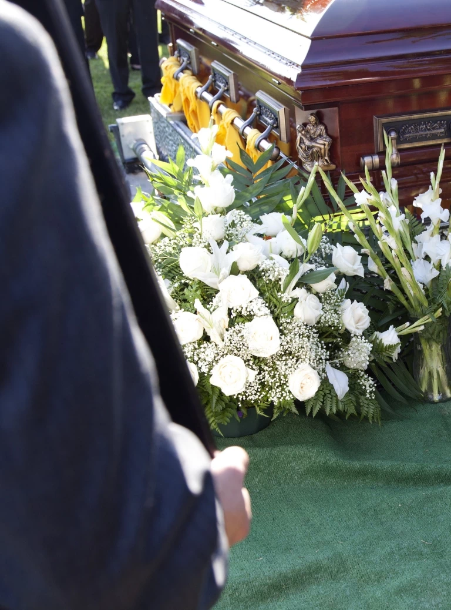

Organizacja pogrzebu — Gdynia, Gdańsk
Zajmiemy się przygotowaniem pochówku krok po kroku — Państwo mogą w spokoju przeżywać żałobę.
Organizacja pochówku to obciążające psychicznie zadanie. Tuż po śmierci bliskiej osoby nie zawsze jesteśmy w stanie poradzić sobie z dopilnowaniem wszelkich formalności. Z tego powodu nasz zakład pogrzebowy oferuje Państwu kompleksową pomoc w organizacji pogrzebu krok po kroku. Decydując się na skorzystanie z naszych usług, nie będą musieli Państwo przejmować się formalnościami oraz wszelkimi czynnościami, o jakie trzeba zadbać po śmierci bliskiej osoby.
Pochówki organizowane przez nasz zakład pogrzebowy odbywają się z należytą godnością dla osoby zmarłej i okazaniem jej szacunku. Mogą być Państwo pewni, że nasi pracownicy sumiennie podchodzą do swoich obowiązków, a nasze usługi realizowane są na najwyższym poziomie. Zajmujemy się organizacją pogrzebów w Gdyni, Gdańsku i okolicznych miejscowościach.
O czym należy pamiętać podczas organizacji pochówku?
Nasz zakład wyręczy Państwa w organizacji pochówku, jednak zanim dojdzie do planowania ceremonii, warto wiedzieć i pamiętać o kilku szczegółach. Do firmy pogrzebowej muszą udać się Państwo z odpowiednimi dokumentami. Wśród nich znajduje się karta zgonu (wystawia ją lekarz), dowód osobisty oraz:
- w przypadku rencistów i emerytów — legitymacja ZUS zmarłej osoby bądź ostatni odcinek renty lub emerytury,
- w przypadku zatrudnionych na etat — zaświadczenie z zakładu pracy, w którym pracowała zmarła osoba.
Następnie konieczne jest otrzymanie aktu zgonu. W tej sprawie należy udać się do Urzędu Stanu Cywilnego. Jeśli sobie Państwo tego życzą, nasz zakład pogrzebowy może zająć się wszystkimi formalnościami – wystarczy, że podpiszą Państwo stosowne pełnomocnictwo.
Ile kosztuje i trwa organizacja pogrzebu?
Chcąc odpowiedzieć na pytanie „Ile kosztuje organizacja pogrzebu?", należy wziąć pod uwagę wiele czynników. Obejmują one m.in. wybór trumny lub urny, miejsce pochówku, oprawę ceremonii czy dodatkowe usługi. Nie da się jednoznacznie określić kosztów organizacji pogrzebu. Warto jednak pamiętać, że zasiłek pogrzebowy z ZUS wynosi 7000 zł i pozwala częściowo pokryć koszty przygotowania ceremonii pochówku.
Wiele osób zastanawia się także nad tym, ile trwa organizacja pogrzebu. Zależy on głównie od sprawności wypełnienia wszystkich formalności urzędowych. Zwykle tradycyjny pochówek zmarłego w trumnie odbywa się w ciągu 3 dni od śmierci. W szczególnych okolicznościach czas ten może wydłużyć się do kilku tygodni, np. ze względu na prowadzone czynności prokuratorskie. Wybór doświadczonego zakładu pogrzebowego może znacznie przyspieszyć termin ceremonii.
Co oferujemy w ramach usług pogrzebowych?
Oferujemy szybką i profesjonalną organizację pogrzebu. Gdy dostarczą nam Państwo kartę zgonu, odbierzemy ciało osoby zmarłej z domu, szpitala, hospicjum lub innego miejsca i przetransportujemy je do chłodni. Po dostarczeniu nam aktu zgonu zajmiemy się zaplanowaniem ceremonii pogrzebowej zgodnie z Państwa oczekiwaniami. Oferujemy kompleksową organizację:
- pogrzebów tradycyjnych,
- pogrzebów z kremacją,
- ekshumacji.
Nasze usługi pogrzebowe obejmują także uzyskanie niezbędnych dokumentów w urzędach oraz rezerwację miejsca na cmentarzu. Służymy pomocą, wsparciem oraz doradztwem w wyborze odpowiedniej trumny lub urny, wieńców i wiązanek oraz innych elementów dekoracji. Zajmiemy się również przygotowaniem ciała zmarłego do pochówku.
Jak może wyglądać ceremonia pochówku?
Dokładamy wszelkich starań, aby planowanie i organizacja pochówku była dla Państwa jak najmniej angażującym zajęciem w tym trudnym czasie. Dbamy o to, aby ceremonia pogrzebowa przebiegała w atmosferze godności, szacunku i skupienia. W tym celu oferujemy:
- profesjonalne nagłośnienie z wybraną muzyką (na żywo lub z odtworzenia),
- baldachimy chroniące zebranych przed deszczem i śniegiem,
- krzesełka dla bliskich i osób starszych,
- rozłożenie sztucznej trawy wokół grobu,
- opuszczenie trumny lub urny za pomocą windy,
- reportaż fotograficzny z pogrzebu.
Jeśli zależy Państwu na tym, aby pożegnać bliską osobę z należytą powagą i dostojnością, zapraszamy do kontaktu. Nasze usługi świadczymy przede wszystkim na terenie Gdańska, Gdyni i okolicznych miejscowości.